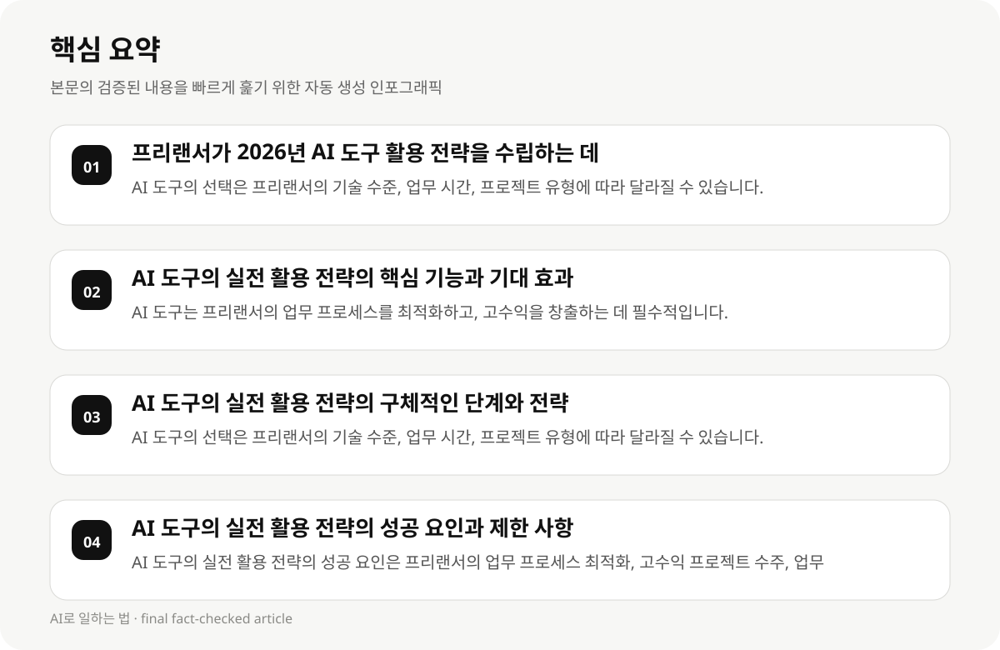

프리랜서가 2026년 AI 도구 활용 전략을 수립하는 데 있어 필요한 정보 #
프리랜서가 2026년 AI 도구의 실전 활용 전략을 수립하는 데 있어, 기업의 업무 환경과 프리랜서의 개인적 상황에 따라 달라질 수 있는 AI 도구의 선택과 구독 계획이 중요합니다. 이는 업무 프로세스 최적화, 고수익 프로젝트 수주, 시간 절감 등 다양한 영역에서 기여할 수 있습니다.
AI 도구의 실전 활용 전략은 프리랜서의 업무 효율성 향상과 수익성 증대에 기여할 수 있지만, 구체적인 전략과 도구의 선택 기준이 명확하지 않아, 프리랜서가 자신의 상황에 맞는 전략을 수립하는 데 어려움이 있습니다.
2026년 AI 도구의 실전 활용 전략은 기술의 발전과 변화에 따라 지속적으로 수정 및 업데이트 필요하며, 프리랜서의 업무 프로세스와 조직 구조에 따라 달라질 수 있습니다.
- AI 도구의 선택은 프리랜서의 기술 수준, 업무 시간, 프로젝트 유형에 따라 달라질 수 있습니다.
- AI 도구의 구독 계획은 프리랜서의 예산, 사용 용량, 기술 능력에 따라 달라질 수 있습니다.
- 2026년 AI 도구의 실전 활용 전략은 기술의 발전과 변화에 따라 지속적으로 수정 및 업데이트 필요합니다.
AI 도구의 실전 활용 전략의 핵심 기능과 기대 효과 #
AI 도구의 실전 활용 전략은 프리랜서의 업무 프로세스를 최적화하고, 고수익을 창출하는 데 필수적입니다. 이는 업무 시간 절감, 프로젝트 수주 유도, 업무 효율성 향상 등 다양한 영역에서 기여할 수 있습니다.
AI 도구는 프리랜서가 업무를 효율적으로 수행할 수 있도록 도와주는 기술입니다. 예를 들어, 자동화된 업무 프로세스, 데이터 분석, 프로젝트 관리 도구 등이 실전 활용 전략에 포함될 수 있습니다.
2026년 AI 도구의 실전 활용 전략은 프리랜서의 업무 프로세스와 조직 구조에 따라 달라질 수 있으므로, 프리랜서는 자신의 상황에 맞는 전략을 수립하는 데 주의를 기울여야 합니다.
- AI 도구는 프리랜서의 업무 프로세스를 최적화하고, 고수익을 창출하는 데 필수적입니다.
- AI 도구는 업무 시간 절감, 프로젝트 수주 유도, 업무 효율성 향상 등 다양한 영역에서 기여할 수 있습니다.
- 2026년 AI 도구의 실전 활용 전략은 프리랜서의 업무 프로세스와 조직 구조에 따라 달라질 수 있습니다.
AI 도구의 실전 활용 전략의 구체적인 단계와 전략 #
AI 도구의 실전 활용 전략은 프리랜서가 2026년에 AI 도구를 활용하여 업무 시간을 절감하고, 고수익 프로젝트 수주를 유도하는 데 있어 중요한 단계입니다. 이는 AI 도구의 기능, 사용 용량, 프리랜서의 기술 수준에 따라 달라질 수 있습니다.
프리랜서는 AI 도구의 선택과 구독 계획을 수립할 때, 업무 시간, 프로젝트 유형, 기술 수준, 예산 등 다양한 요소를 고려해야 합니다. 이는 AI 도구의 실전 활용 전략의 효과를 높이기 위해 필수적입니다.
AI 도구의 실전 활용 전략은 프리랜서의 업무 프로세스와 조직 구조에 따라 달라질 수 있으므로, 프리랜서는 자신의 상황에 맞는 전략을 수립하는 데 주의를 기울여야 합니다.
- AI 도구의 선택은 프리랜서의 기술 수준, 업무 시간, 프로젝트 유형에 따라 달라질 수 있습니다.
- AI 도구의 구독 계획은 프리랜서의 예산, 사용 용량, 기술 능력에 따라 달라질 수 있습니다.
- 2026년 AI 도구의 실전 활용 전략은 프리랜서의 업무 프로세스와 조직 구조에 따라 달라질 수 있습니다.

AI 도구의 실전 활용 전략의 성공 요인과 제한 사항 #
AI 도구의 실전 활용 전략의 성공 요인은 프리랜서의 업무 프로세스 최적화, 고수익 프로젝트 수주, 업무 시간 절감 등 다양한 요소입니다. 이는 AI 도구의 기능, 사용 용량, 프리랜서의 기술 수준에 따라 달라질 수 있습니다.
AI 도구의 실전 활용 전략의 제한 사항은 기술의 발전과 변화, 프리랜서의 업무 프로세스와 조직 구조에 따라 달라질 수 있습니다. 이는 프리랜서가 실전 활용 전략을 수립하는 데 어려움이 있을 수 있습니다.
2026년 AI 도구의 실전 활용 전략은 기술의 발전과 변화에 따라 지속적으로 수정 및 업데이트 필요하며, 프리랜서의 업무 프로세스와 조직 구조에 따라 달라질 수 있습니다.
- AI 도구의 실전 활용 전략의 성공 요인은 프리랜서의 업무 프로세스 최적화, 고수익 프로젝트 수주, 업무 시간 절감 등 다양한 요소입니다.
- AI 도구의 실전 활용 전략의 제한 사항은 기술의 발전과 변화, 프리랜서의 업무 프로세스와 조직 구조에 따라 달라질 수 있습니다.
- 2026년 AI 도구의 실전 활용 전략은 기술의 발전과 변화에 따라 지속적으로 수정 및 업데이트 필요하며, 프리랜서의 업무 프로세스와 조직 구조에 따라 달라질 수 있습니다.
AI 도구의 실전 활용 전략의 실천 단계와 전략 #
AI 도구의 실전 활용 전략은 프리랜서가 2026년에 AI 도구를 활용하여 업무 시간을 절감하고, 고수익 프로젝트 수주를 유도하는 데 있어 중요한 단계입니다. 이는 AI 도구의 기능, 사용 용량, 프리랜서의 기술 수준에 따라 달라질 수 있습니다.
프리랜서는 AI 도구의 선택과 구독 계획을 수립할 때, 업무 시간, 프로젝트 유형, 기술 수준, 예산 등 다양한 요소를 고려해야 합니다. 이는 AI 도구의 실전 활용 전략의 효과를 높이기 위해 필수적입니다.
AI 도구의 실전 활용 전략은 프리랜서의 업무 프로세스와 조직 구조에 따라 달라질 수 있으므로, 프리랜서는 자신의 상황에 맞는 전략을 수립하는 데 주의를 기울여야 합니다.
- AI 도구의 실전 활용 전략의 실천 단계는 프리랜서의 업무 시간, 프로젝트 유형, 기술 수준, 예산 등 다양한 요소에 따라 달라질 수 있습니다.
- AI 도구의 실전 활용 전략의 전략은 프리랜서의 업무 프로세스 최적화, 고수익 프로젝트 수주, 업무 시간 절감 등 다양한 요소에 따라 달라질 수 있습니다.
- 2026년 AI 도구의 실전 활용 전략은 프리랜서의 업무 프로세스와 조직 구조에 따라 달라질 수 있습니다.
AI 도구의 실전 활용 전략의 성공 사례와 실패 사례 #
AI 도구의 실전 활용 전략의 성공 사례는 프리랜서가 AI 도구를 활용하여 업무 시간을 절감하고, 고수익 프로젝트 수주를 유도하는 데 있어 중요한 사례입니다. 이는 AI 도구의 기능, 사용 용량, 프리랜서의 기술 수준에 따라 달라질 수 있습니다.
AI 도구의 실전 활용 전략의 실패 사례는 프리랜서가 AI 도구의 선택과 구독 계획을 수립할 때, 업무 시간, 프로젝트 유형, 기술 수준, 예산 등 다양한 요소를 고려하지 못한 경우입니다. 이는 AI 도구의 실전 활용 전략의 효과를 높이기 위해 필수적입니다.
2026년 AI 도구의 실전 활용 전략은 기술의 발전과 변화에 따라 지속적으로 수정 및 업데이트 필요하며, 프리랜서의 업무 프로세스와 조직 구조에 따라 달라질 수 있습니다.
- AI 도구의 실전 활용 전략의 성공 사례는 프리랜서의 업무 시간, 프로젝트 유형, 기술 수준, 예산 등 다양한 요소에 따라 달라질 수 있습니다.
- AI 도구의 실전 활용 전략의 실패 사례는 프리랜서가 AI 도구의 선택과 구독 계획을 수립할 때, 업무 시간, 프로젝트 유형, 기술 수준, 예산 등 다양한 요소를 고려하지 못한 경우입니다.
- 2026년 AI 도구의 실전 활용 전략은 기술의 발전과 변화에 따라 지속적으로 수정 및 업데이트 필요하며, 프리랜서의 업무 프로세스와 조직 구조에 따라 달라질 수 있습니다.
AI 도구의 실전 활용 전략의 결론과 제안 #
AI 도구의 실전 활용 전략은 프리랜서가 2026년에 AI 도구를 활용하여 업무 시간을 절감하고, 고수익 프로젝트 수주를 유도하는 데 있어 중요한 단계입니다. 이는 AI 도구의 기능, 사용 용량, 프리랜서의 기술 수준에 따라 달라질 수 있습니다.
프리랜서는 AI 도구의 선택과 구독 계획을 수립할 때, 업무 시간, 프로젝트 유형, 기술 수준, 예산 등 다양한 요소를 고려해야 합니다. 이는 AI 도구의 실전 활용 전략의 효과를 높이기 위해 필수적입니다.
AI 도구의 실전 활용 전략은 프리랜서의 업무 프로세스와 조직 구조에 따라 달라질 수 있으므로, 프리랜서는 자신의 상황에 맞는 전략을 수립하는 데 주의를 기울여야 합니다.
- AI 도구의 실전 활용 전략은 프리랜서의 업무 시간, 프로젝트 유형, 기술 수준, 예산 등 다양한 요소에 따라 달라질 수 있습니다.
- AI 도구의 실전 활용 전략은 프리랜서의 업무 프로세스와 조직 구조에 따라 달라질 수 있습니다.
- 2026년 AI 도구의 실전 활용 전략은 기술의 발전과 변화에 따라 지속적으로 수정 및 업데이트 필요하며, 프리랜서의 업무 프로세스와 조직 구조에 따라 달라질 수 있습니다.
AI 도구의 실전 활용 전략의 참고 자료 #
AI 도구의 실전 활용 전략은 프리랜서가 2026년에 AI 도구를 활용하여 업무 시간을 절감하고, 고수익 프로젝트 수주를 유도하는 데 있어 중요한 단계입니다. 이는 AI 도구의 기능, 사용 용량, 프리랜서의 기술 수준에 따라 달라질 수 있습니다.
프리랜서는 AI 도구의 선택과 구독 계획을 수립할 때, 업무 시간, 프로젝트 유형, 기술 수준, 예산 등 다양한 요소를 고려해야 합니다. 이는 AI 도구의 실전 활용 전략의 효과를 높이기 위해 필수적입니다.
AI 도구의 실전 활용 전략은 프리랜서의 업무 프로세스와 조직 구조에 따라 달라질 수 있으므로, 프리랜서는 자신의 상황에 맞는 전략을 수립하는 데 주의를 기울여야 합니다.
- AI 도구의 실전 활용 전략은 프리랜서의 업무 시간, 프로젝트 유형, 기술 수준, 예산 등 다양한 요소에 따라 달라질 수 있습니다.
- AI 도구의 실전 활용 전략은 프리랜서의 업무 프로세스와 조직 구조에 따라 달라질 수 있습니다.
- 2026년 AI 도구의 실전 활용 전략은 기술의 발전과 변화에 따라 지속적으로 수정 및 업데이트 필요하며, 프리랜서의 업무 프로세스와 조직 구조에 따라 달라질 수 있습니다.